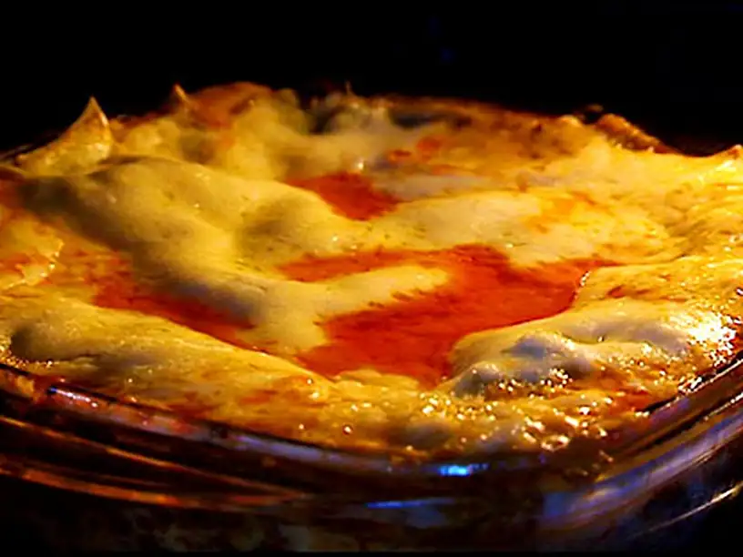

Lasagna, Morberg-style
With Google-translated English from Swedish.

It is very easy to eat too much of this, since it is so tasty.
Ingredients for the mincemeat-sauce(In Swedish!)
- 500 g köttfärs (eller högrev att mala)
- 100 g champinjoner
- 100 g rökt sidfläsk
- 400 g passerade tomater
- 1 dl tomatpuré
- 4 klyftor vitlök
- 2 msk olivolja
- salt
- svartpeppar
- 100 g prästost, att riva
- 10 lasagneplattor (gröna)
Ingredients for the bechamel-sauce(Again, in Swedish. Fun, eh?)
7 dl mjölk
2 dl vispgrädde
100 g smör
1 dl vetemjöl
muskot, riv några drag
1 dl vetemjöl
salt
Lasagna, Part 1
- Prepare the mincemeat
- Cut the pork loin and mushrooms finely.
- Finely chop the garlic.
- Fry the meat in a pan with butter until browned.
- Then fry the pork loin, mushrooms and garlic in a little olive oil until golden brown.
- Add the tomato puree.
- Put everything in a thick-bottomed pot (preferably an iron pot) and pour in the passed tomato.
- Taste with salt and freshly ground black pepper.
- Let everything simmer in the pot for 30-40 minutes(make the bechamel meanwhile why don'tcha'?).
Bechamel
- Heat cream and milk.
- Melt the butter in another saucepan and dust over the flour.
- Stir with a whisk so that the flour dissolves in the butter properly.
- Fry the meat in a pan with butter until browned.
- Beat in half of the hot cream milk and stir so it is smooth and fine.
- Beat in the rest and whisk again.
- Let simmer slowly for 5-10 minutes.
- Smaka av med salt, peppar och några drag på muskotnöten.
Lasagna Part 2
- Take a deep oven dish and place a layer of plates in the bottom.
- Wrap with a layer of bechamel sauce and grated cheese and a layer of minced meat-sauce.
- Continue until all plates are finished and finish the lasagna with a final layer of minced meat-sauce, bechamel sauce and cheese.
- Sätt in i ugnen och grädda din lasagne i 20-30 minuter i 200 grader.
- Milk